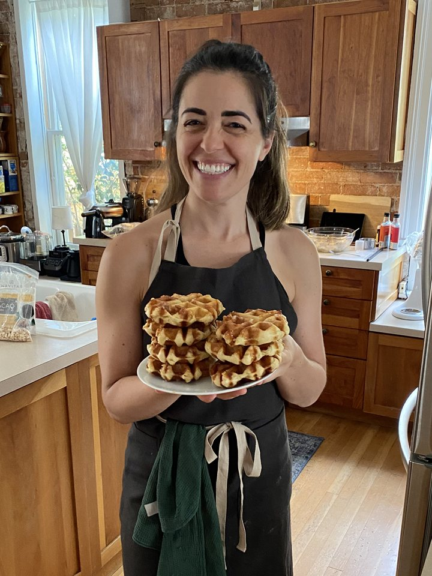

Recipe Box
Family recipes from my yiayia, and favorites from my own kitchen.
Like many, I learned to cook from my grandmother. But, unlike many, I learned from my yiayia (γιαγιά, Greek for grandmother). When I think of my yiayia, Mary, I picture her in the kitchen. She didn’t cook just because people needed feeding (although I’m sure that gave her a lot of joy). I think she loved the kitchen because it was her craft, the place where she had the most freedom to create.
She was born in the 1920s, the eldest of five children of parents who had immigrated from Greece. I often wonder what it was like to be a child then, trying to find your place in a world that was so foreign to your parents. We learn so much from our parents without realizing it, and she learned the art of cooking from her mother. I have plenty of stories from that kitchen, and a green tin recipe box full of recipes written in Greek. I imagine she was lucky to discover a craft: partly passed down through tradition, partly because she was the eldest girl, and partly because she had a gift for hospitality.
These recipes come from her collection. Some are her own, and some came from the friends and family she cooked with: Ero’s kourabiedes, Vivian’s pumpkin pie, RoseAnn’s cheesecake, and a pie crust from Mrs. Myer’s mother in Tilson, New York.
Like the ones in that green tin box, a lot of the recipes passed down to me call for things like “a dash of ouzo” or “a couple of spoonfuls of sugar.” So I’m working through each of her recipes to give more precise measurements, because not everyone has a yiayia on standby. Cooking was something that she freely shared, and I hope to do the same here.

I’m happy to have found something that I enjoy so much, and I thank my yiayia for all those days in the kitchen when we would create together. I love it when I make something and think, “This tastes like what my yiayia would make.”
In these pages, you’ll see an assortment of recipes. You can toggle between the ones from my yiayia, and ones I’ve discovered on my own. Each recipe is marked Not yet tested until I’ve made it myself, so amounts and times may need adjusting. Every one has a printable card you can download.
Greek Sweets & Breads
Ero’s Kourabiedes
Greek butter cookies • Makes about 40
Not yet tested I haven't tested this one yet, so amounts and times may need adjusting.
From Ero, in Yiayia's recipe collection
Ingredients
- 1 lb (4 sticks) sweet (unsalted) butter, softened
- 1 demitasse cup confectioners' sugar (about ½ cup)
- 1 egg yolk, beaten
- 1 jigger whiskey, cognac, or ouzo (about 1½ oz)
- 5 cups all-purpose flour (Pillsbury recommended)
- Confectioners' sugar, for finishing
- Rose water, for brushing (optional)
Instructions
- Preheat the oven to 350°F (175°C). Line baking sheets with parchment paper.
Dough
- Beat the butter until creamy and light, like whipped cream.
- Gradually beat in the confectioners' sugar, then the egg yolk, until smooth and fluffy.
- Stir in the whiskey, cognac, or ouzo.
- Gradually add the flour until the dough is soft but not sticky. You may need a little more or less depending on humidity and your flour.
Shape & bake
- Shape walnut-size pieces into crescents or balls and set them about 1 inch apart on the sheets.
- Bake 15–20 minutes, until just starting to turn golden around the edges.
Finish
- While still warm, lightly brush with rose water (if using) and sift confectioners' sugar generously over the top.
- Cool a few minutes on the sheets, then move to a rack to cool completely. Sift on more sugar before serving.
Perfect for holidays and special occasions, and as gifts. Serve on a dessert platter with coffee or tea.
Galaktoboureko
Custard in phyllo with light syrup • Serves 8–10
Not yet tested I haven't tested this one yet, so amounts and times may need adjusting.
From Yiayia's recipe collection
Ingredients
Custard
- ¼ cup (½ stick) butter
- 3 cups milk
- ¾ cup sugar
- 1 cup cream of rice (or fine semolina)
- 1 tsp vanilla extract
- 4 large eggs (or 5 if small), beaten
Phyllo (best guess)
- 1 lb (16 oz) phyllo sheets, thawed
- ¾–1 cup (1½–2 sticks) butter, melted, for brushing
Light syrup
- 1 cup water
- ½ cup sugar
- ½ tsp lemon juice
Instructions
Custard
- In a large saucepan, heat the milk, butter, and sugar over medium heat until nearly boiling.
- Slowly whisk in the cream of rice and keep whisking until thick and smooth.
- Remove from the heat and cool to lukewarm, stirring now and then so a skin doesn't form.
- Gradually whisk in the beaten eggs until smooth and creamy, then stir in the vanilla.
Syrup
- In a small saucepan, bring the water, sugar, and lemon juice to a boil. Simmer until slightly thickened, about 10 minutes. Cool completely.
Bake & finish
- Preheat the oven to 350°F (175°C). Butter a 9×13-inch baking dish.
- Layer about half the phyllo sheets in the dish, brushing each with melted butter and letting the edges hang over the sides. Keep the rest covered with a damp towel so it doesn't dry out.
- Pour in the custard and smooth the top. Fold the overhanging phyllo over it.
- Layer the remaining sheets on top, brushing each with butter. Tuck in the edges, then score the top layers into squares with a sharp knife, without cutting down to the custard.
- Bake 45–55 minutes, until the phyllo is deep golden and the custard is set.
- Let it cool slightly, then pour the cooled syrup evenly over the top so it soaks in.
- Cool completely before cutting along the scored lines.
Serve chilled or at room temperature. It pairs beautifully with a cup of Greek coffee.
If Yiayia meant phyllo shreds on top, use 8 oz kataifi instead of the top sheets. Pull it apart, toss it with ½ cup melted butter, and spread it over the custard before baking.
Vasilopita
Greek New Year bread with a hidden coin
Not yet tested I haven't tested this one yet, so amounts and times may need adjusting.
From Yiayia's recipe collection
Ingredients
Bread
- ½ cup water (for steeping the spices)
- ¼ tsp mastic (mastiha), ground
- ¼ tsp mahlepi (mahlab), ground
- ¼ lb (1 stick) salted butter, melted
- ⅓ cup sweetened condensed milk, warmed
- 3 eggs, warmed
- 4 cups flour
- ½ cup confectioners' (powdered) sugar
- 4 packets Equal sweetener
- 2 packages instant yeast
- 1 dime (or other coin), wrapped in aluminum foil
Glaze
- 1 egg yolk
- 1 tbsp water
- Sesame seeds, for sprinkling
Instructions
Spiced liquid
- Bring the ½ cup water to a boil in a small pot, add the mastic and mahlepi, and remove from the heat.
- Add the melted butter and condensed milk. Cool to room temperature, then whisk in the warm eggs.
Dough
- Sift the flour into a large bowl and mix in the powdered sugar, Equal, and yeast.
- Make a well in the center, pour in the liquid, and knead until the dough is soft and not sticky. (Buttered, gloved hands help.)
- Cover with a towel and let rise at room temperature for 1 hour.
Shape & bake
- Knead briefly, shape as you like, and press the foil-wrapped coin into the dough.
- Mix the egg yolk and water, brush it over the top, and sprinkle with sesame seeds.
- Let rise another hour at room temperature.
- Bake at 325°F (165°C) until deep golden and the center reads 190°F, about 35–45 minutes. Start checking at 20 minutes (see the note above).
- Cool before slicing. Whoever finds the coin has good luck for the year!
Mix the dry ingredients with the flat beater. Switch to the dough hook and add the liquid on low (speed 2), then knead on medium (speed 4–6) for 8–10 minutes until soft, smooth, elastic, and clear of the bowl. Let it rise in a greased, covered bowl until doubled, about 1 hour. Shape, set on a parchment-lined sheet, cover, and rise another hour.
Mains & Salads
Stuffed Zucchini
Vegetable, quinoa & Parmesan filling • Serves 5
Not yet tested I haven't tested this one yet, so amounts and times may need adjusting.
From Yiayia's recipe collection
Ingredients
- 5 medium zucchini
- 3 tbsp olive oil
- 3 cloves garlic, minced
- 1 large onion, finely chopped
- 1 red bell pepper, finely chopped
- ½ cup chopped celery
- ½ cup chopped mushrooms
- ½ cup cooked quinoa
- Zucchini pulp, chopped (saved from scooping)
- ¼ cup grated Parmesan
- Salt and pepper, to taste
Instructions
- Preheat the oven to 375°F (190°C).
- Halve the zucchini lengthwise and scoop out the pulp, leaving a ¼-inch shell. Chop the pulp and set it aside.
- Heat the oil in a large skillet over medium heat. Sauté the garlic, onion, and red pepper until the onion is translucent, about 5 minutes.
- Add the celery and mushrooms and cook until tender, about 5 minutes more.
- Stir in the zucchini pulp and quinoa and cook 2–3 minutes. Season with salt and pepper.
- Remove from the heat, cool slightly, and stir in the Parmesan.
- Arrange the shells on a baking sheet and spoon in the filling, packing lightly.
- Bake 30 minutes, until the shells are tender and the tops lightly browned. Serve warm, with extra Parmesan or a drizzle of olive oil.
Couscous Salad
Artichokes, chickpeas, mint & chicken • Serves 6–8
Not yet tested I haven't tested this one yet, so amounts and times may need adjusting.
From Yiayia's recipe collection
Ingredients
- 1 cup couscous
- 1 cup vegetable broth
- 1 can (about 14 oz) artichoke hearts, drained and chopped
- 1 bunch scallions, chopped
- ¼ cup fresh mint, chopped
- 1 large carton (about 15 oz) chickpeas, drained and rinsed
- 1 cup cherry tomatoes, halved
- ½ English cucumber, chopped
- 1 cooked chicken breast, chopped
- ½ cup olive oil
- Juice of ½ lemon
- ½ tsp cayenne pepper (to taste)
Instructions
- Bring the broth to a boil, stir in the couscous, and remove from the heat. Cover for 5 minutes, until the liquid is absorbed. Fluff with a fork and cool.
- In a large bowl, combine the couscous, artichokes, scallions, mint, chickpeas, tomatoes, and cucumber.
- Gently mix in the chicken. Drizzle with the olive oil and lemon juice, sprinkle with cayenne, and mix well.
- Chill at least 30 minutes. Stir again before serving and adjust the lemon or cayenne to taste.
The notes filed this under vegetarian dishes, but it includes chicken. Leave the chicken out for a vegetarian version.
Sausage Maple Hash with Sweet Potatoes
With yellow tomato salsa and a melon-cucumber salad • Serves 4
Not yet tested I haven't tested this one yet, so amounts and times may need adjusting.
From Yiayia's recipe collection
Ingredients
Hash
- 1 lb maple-flavored sausage
- 2 medium sweet potatoes, peeled and diced
- 1 large red onion, diced
- 1 tsp chili powder
- 1 tsp smoked cumin
- ½ tsp ground coriander
- ½ cup grated Manchego
Sauce
- 3 yellow tomatoes
- 1 small jalapeño, seeded and finely chopped
- 1 small red onion, finely chopped
- ¼ cup chopped fresh cilantro
- Juice of 1 lime
Salad
- 1 cup diced melon (any kind)
- 1 English cucumber, diced, skin on
- ¼ cup chopped red onion
- ½ cup sliced radishes
Dressing
- 2 tbsp mint jelly
- 3 tbsp olive oil
- Juice of 1 lime
Instructions
Hash
- In a large skillet over medium heat, cook the sausage, breaking it up, until cooked through and slightly crispy.
- Add the sweet potatoes and red onion and cook, stirring now and then, until the potatoes are tender and lightly browned.
- Stir in the chili powder, smoked cumin, and coriander and cook 2 minutes more.
- Off the heat, sprinkle the Manchego over the hot hash and let it melt.
Sauce
- Blanch the tomatoes to slip off the skins, remove the seeds, and dice.
- Mix the tomatoes with the jalapeño, red onion, cilantro, and lime juice. Set aside to let the flavors meld.
Salad & dressing
- Combine the melon, cucumber, red onion, and radishes.
- Whisk the mint jelly, olive oil, and lime juice, then toss with the salad.
Serve
- Divide the hash among plates, top with a spoonful of the sauce, and serve the salad on the side.
Sauces & Spreads
Skordalia
Greek garlic sauce, two ways
Not yet tested I haven't tested this one yet, so amounts and times may need adjusting.
From Yiayia's recipe collection
Quick blender version • About 1 cup
Ingredients
- 1 medium clove garlic
- ¼ cup vinegar (white or red wine vinegar preferred)
- ½ cup olive oil
- 8 slices white bread, crusts removed
- Water, for soaking the bread
Instructions
- Soak the bread in water just until moistened, then squeeze out the excess thoroughly. It should be damp, not wet.
- In a food processor or blender, pulse the bread, garlic, and vinegar into a smooth paste.
- With the machine running, drizzle in the olive oil very slowly so it emulsifies and turns creamy.
- Thin with a little water or vinegar if needed, and adjust the garlic and vinegar to taste.
- Chill at least an hour to let the flavors meld. Serve chilled or at room temperature.
Serve as a dip with vegetables or fish, as a spread for bread, or on a meze platter alongside fried zucchini and eggplant.
Whole-head garlic version • About 1–1½ cups
Ingredients
- 1 whole head garlic, cloves peeled
- 1 tsp salt
- ¼ cup white wine or cider vinegar
- 1 large loaf dried bread (a day or two old)
- About 1 cup olive oil
Instructions
- Mash the garlic with the salt in a mortar and pestle until smooth and pasty. (No mortar? Use the flat of a knife or a small food processor.)
- Cut off the bread crusts. Soak the soft center just until moistened, then squeeze out all the excess water.
- Put the bread in a large bowl with the garlic paste and vinegar.
- Beat with an electric mixer or a strong whisk while drizzling in the olive oil very slowly, until thick and creamy like a thick mayonnaise.
- Adjust the salt and vinegar to taste, and loosen with a little vinegar or water if it's too thick.
Serve with vegetables, grilled meats, or warm bread, or as part of a Greek meze platter.
Balsamic and Crème Fraîche Fruit Sauce
A rich drizzle for fresh fruit
Not yet tested I haven't tested this one yet, so amounts and times may need adjusting.
From Yiayia's recipe collection
Ingredients
- ¾ cup balsamic vinegar
- 1 heaping tbsp crème fraîche
- 1 tsp sugar
Instructions
- In a small saucepan over medium heat, whisk the vinegar, crème fraîche, and sugar together.
- Bring to a boil, stirring so the sugar dissolves.
- Lower the heat and simmer, stirring occasionally, until reduced by about half, 5–10 minutes.
- Cool slightly and drizzle sparingly over fresh fruit; the flavor is rich.
Lovely with strawberries, blueberries, or sliced pears, on a dessert plate or in a fruit salad.
Basics
Pie Crust
Shortening crust • 1 double or 2 single crusts
Not yet tested I haven't tested this one yet, so amounts and times may need adjusting.
From Mrs. Myer's mother (Tilson, NY), in Yiayia's recipe collection
Ingredients
- 2 cups all-purpose flour
- 1 tsp salt
- ¾ cup Crisco (vegetable shortening)
- 4–6 tbsp ice water
Instructions
- In a large bowl, mix the flour and salt.
- Cut in the Crisco with a pastry cutter or two forks until it looks like coarse crumbs with some pea-size pieces.
- Sprinkle 4 tablespoons ice water over it and mix gently with a fork, adding more a tablespoon at a time just until the dough starts to come together.
- Turn it out onto a lightly floured surface and knead a few times into a ball. Divide in half for two single crusts.
- Flatten into discs, wrap, and chill at least 30 minutes.
- To use, let a well-chilled disc sit about 10 minutes, roll it out on a floured surface to fit your dish, and bake as your pie recipe directs.
Breads & Breakfast
Focaccia
Extra jiggly, extra bubbly • Sourdough or no-knead yeasted • One 9×13" pan
Sourdough adapted from Kim (@cookim_mama) · No-knead version by Emma Fontanella (recipe)
Sourdough focaccia • 82% hydration
Adapted from Kim (@cookim_mama)
Ingredients
Dough (scales up or down)
- 425g bread flour
- 25g whole wheat flour
- 370g water (82% hydration), 20g reserved
- 98g sourdough starter (25% levain)
- 1g instant yeast (optional)
- 9g salt (2%)
- 9g extra virgin olive oil (2%)
For the pan & top
- Olive oil for the pan, your hands, and drizzling
- Toppings of your choice (I use brie)
- Honey or apricot glaze, for finishing
Instructions
- Autolyse: In the morning, mix the bread flour and whole wheat flour with the water, reserving 20g of water for step 2. Cover and rest at least 1 hour, or until your starter is ready.
- Mix: Add the levain and combine. Add the salt, yeast, and remaining 20g of water. Once combined, add the olive oil. Slap and fold until the dough comes together. It will be very sticky but will come together over the next few steps. Return to the bowl, cover, and bulk ferment 30 mins.
- Stretch & folds: Perform 2–3 rounds of stretch and folds, each separated by 20–30 mins.
- Coil folds: Perform 2–3 rounds of coil folds, each separated by 20–30 mins. The dough should show signs of fermentation and be smoother now.
- Pan & proof: Transfer the dough to a well-oiled 9×13" pan and gently stretch it to fill the pan. If it doesn't reach the corners, that's fine; it will spread as it proofs. Cover and ferment at least 3–4 hours in a warm spot.
- Dimple: Preheat oven to 400°F (205°C). Drizzle the dough with olive oil, grease your hands, and dimple.
- First bake: Bake at 400°F for 20 mins.
- Top: Remove from the oven and raise the temperature to 450°F (230°C). Add your toppings (I use brie). This step may vary depending on the topping and whether it's pre-cooked (e.g., veggies).
- Second bake: Return to the 450°F oven for 10 mins.
- Glaze & finish: Remove the focaccia and turn the oven off. Brush or drizzle with honey or apricot glaze, then return it to the warm, cooling oven for 10–20 mins, checking often so it doesn't overbake.
How much water a focaccia dough needs depends on your flour, your kitchen, and where you live, especially at altitude. I've always needed to add more water than the recipe calls for. The dough should be very wet and loose; compare yours to the dough photos in Emma Fontanella's recipe, and if it looks stiffer, add water a little at a time while mixing.
- Sourdough starter
- The live culture of flour, water, wild yeast, and bacteria you keep and feed. It's "ready" when bubbly and about doubled, usually 4–12 hours after feeding.
- Levain
- The portion of active starter that goes into this dough. Here the 98g of ready starter is the levain; the terms are used interchangeably.
- Autolyse
- Resting flour and water together before adding starter, salt, or yeast. Hydrates the flour and starts gluten forming, so the dough is easier to work.
- Hydration & %
- Baker's percentages are relative to total flour weight (450g). 82% hydration means a very wet dough, which is what makes the crumb open and bubbly.
- Bulk ferment
- The first rise of the whole dough, during which the folds happen and the dough builds strength and flavor.
- Slap & fold
- Lifting the sticky dough, slapping it onto the counter, and folding it over itself. Builds strength quickly in a wet dough.
- Stretch & fold
- With wet hands, stretch one side of the dough up and fold it over. Turn the bowl and repeat on all four sides; that is one round.
- Coil fold
- Lift the dough from the middle so the ends tuck under, turn the bowl, and repeat. Gentler than stretch and folds, so it keeps the bubbles.
- Proof
- The final rise in the pan, where the dough puffs up and spreads before baking.
- Dimple
- Pressing oiled fingertips straight down into the dough to make the classic focaccia wells.
Big bubble no-knead focaccia with dried yeast • ~84% hydration
Recipe by Emma Fontanella · Big Bubble No-Knead Focaccia
Ingredients
Dough
- 2 cups (470g) lukewarm water, 80–100°F (27–37°C), plus more as needed
- 2 tsp (11g) salt
- 1 tbsp extra virgin olive oil, plus plenty for the pan and drizzling
- 7g dried yeast (active or instant)
- 4 cups (560g) bread flour or Italian 00 flour (12% protein)
Toppings
- Rosemary
- Olives
- 2 tbsp olive oil
- Flaky sea salt
Instructions
Mix
- In a large bowl, whisk the water, salt, olive oil, and yeast.
- Add the flour and mix with a spoon or spatula until fully combined and no dry flour remains. Scrape down the sides, cover, and rest 30 mins.
- Check the hydration: the dough should be very wet and sticky. If it's stiff or dry, add water a little at a time (see the note below).
Stretch & fold
- Stretch one side of the dough up and fold it over to the opposite side. Turn the bowl a quarter and repeat 3 more times. Cover and rest 30 mins.
- Repeat for 3 more rounds (4 in total), resting 30 mins between each.
Ferment, pan & proof
- Cover and refrigerate overnight, or up to 48 hours. (Same day: rest 30–40 mins at room temperature instead.)
- Coat a 9×13" pan with 3–4 tbsp olive oil (line the bottom with parchment first if it isn't nonstick). Give the dough one last gentle stretch & fold, set it in the pan, and drizzle with more oil.
- Cover and proof about 2 hours if the dough came from the fridge, or at least 1 hour if same-day.
Dimple & bake
- Heat the oven to 400°F (200°C), with the fan on if you have one. Drizzle the dough with more oil, oil your hands, and dimple, jiggling the dough to spread it into the pan.
- Add the toppings, oiled so they don't burn, and bake 20–25 mins, until golden and crispy.
- Rest at least 10–15 mins before slicing. Serve warm or cold.
How much water a focaccia dough needs depends on your flour, your kitchen, and where you live, especially at altitude. I've always needed to add more water than the recipe calls for. Emma notes that higher-protein bread flour is "thirstier" than Italian 00 flour. Compare your dough to the photos in her recipe, and if it looks stiffer, add water a little at a time.
Halve the recipe for an 8" square pan (at least 2" deep). Leftovers reheat well: about 10 mins in the oven re-crisps the outside.
High-Altitude Blueberry Muffins
Adapted for 5,000 ft elevation • Makes 12 muffins
Adapted for altitude from Benjamin Delwiche, Dessert Course
Ingredients
Dry ingredients
- 2 cups (280g) all-purpose flour
- 1¼ tsp baking powder
- ¼ tsp baking soda
- ½ tsp table salt
Wet ingredients
- 140g (⅔ cup + 1 tbsp) granulated sugar
- ¼ cup (84g) honey
- 190g (¾ cup + 1 tbsp) buttermilk
- ½ cup (100g) vegetable oil
- 2 large eggs
- 1 tsp vanilla extract
Fold-in & topping
- 1 cup (170g) wild blueberries, fresh or frozen
- ¼ cup (50g) turbinado sugar, for topping
Instructions
- Preheat oven to 400°F. Line a 12-cup muffin pan with paper liners.
- In a medium bowl, whisk together the flour, baking powder, baking soda, and salt.
- In a separate large bowl, whisk the granulated sugar, honey, buttermilk, oil, eggs, and vanilla until well combined.
- Add the dry ingredients to the wet. Fold gently with a spatula just until combined. A few streaks of flour are fine; do not overmix.
- Gently fold in the blueberries. If using frozen, do not thaw them first.
- Divide the batter evenly among the 12 cups, about ¼ cup each (#16 scoop).
- Sprinkle the tops with turbinado sugar.
- Bake at 400°F for about 20 minutes, checking at 15. Muffins are done when the tops are golden and a toothpick in the center comes out clean or with a few moist crumbs.
- Cool in the pan for about 5 minutes, then transfer to a wire rack.
Tangzhong Cinnamon Rolls
One method, two doughs: classic and pumpkin • 8 large or 12 smaller rolls
Adapted from Kiley Heard's classic and pumpkin cinnamon rolls · Well Made by Kiley
Shared method for both variants: tangzhong, shaping, baking & frosting
Ingredients
Before baking (both variants)
- ½ cup (120ml) heavy cream, for pouring over the rolls
Cream cheese frosting (both variants)
- 8 oz (250g; 1 block) cream cheese, softened
- ¼ cup (58g) salted butter, softened
- 1¾ cups (210g) powdered sugar
- 1 tsp (4g) vanilla bean paste or extract
Instructions
Universal shape, bake & frost protocol
- Make the dough: Follow the Classic or Pumpkin tab through the first rise and the filling.
- Roll out: Butter a 9×13" pan. On a lightly floured surface, roll the dough to 16×15" for 8 large rolls or 24×15" for 12 smaller rolls.
- Fill: Spread the filling evenly over the dough, leaving a very thin border.
- Shape: Cut along the long side into 2"-wide strips. Roll each strip up from the short end into a tight coil and tuck the tail underneath. (Or roll the whole sheet into a log and slice 2" rolls with a sharp knife or unflavored floss.)
- Proof: Arrange in the pan, cover, and proof 25–30 minutes until puffy while the oven heats to 350°F.
- Cream: Warm the cream about 15 seconds in the microwave and pour it all over the rolls.
- Bake: Bake at 350°F (22–24 minutes for 8 large rolls, 20–22 minutes for 12 smaller), then raise the oven to 375°F and bake 5–7 minutes more, until golden and cooked through.
- Frost: While they bake, beat the cream cheese and butter until fluffy, then beat in the powdered sugar and vanilla. Rest the rolls 10–15 minutes, spread on the frosting while they're still warm, and serve.
A small portion of the recipe's flour cooked with liquid into a thick paste before it goes into the dough. Cooking lets the flour's starch absorb far more liquid than it could cold, and it holds onto that moisture through baking, so the rolls come out softer and fluffier and stay soft longer. The tangzhong's flour and liquid come out of the dough's totals, so the dough feels tackier than usual. Resist adding much extra flour.
The first rise is only 30–45 minutes, and the dough won't double. That's on purpose: a longer rise makes the rolls too airy.
Assemble the rolls in the pan, cover tightly, and refrigerate overnight instead of the second proof. In the morning, let them come to room temperature and proof 45–60 minutes, then add the cream and bake.
Covered at room temperature for 1 day (keep frosting in the fridge separately), frosted in the fridge for 3 days, or unfrosted and frozen for up to 2 months. Reheat at 325°F for 10–15 minutes and frost fresh.
Classic cinnamon rolls with a milk tangzhong
Adapted from Kiley Heard's Perfect Classic Cinnamon Rolls, with the tangzhong from Bon Appétit's Cinnamon Rolls with Cream Cheese Frosting
Ingredients
Milk tangzhong
- ¾ cup (180ml) whole milk
- ¼ cup (31g) all-purpose flour
Dough
- ½ cup (110g) granulated sugar
- 2½ tsp (9g) instant yeast
- ½ cup (120g) Greek yogurt (any %) or sour cream, room temp
- ½ cup (113g) salted butter, very softened (almost melted)
- 2 eggs, room temp
- 1 tsp (4g) vanilla bean paste or extract
- 509g bread flour (4½ cups minus the tangzhong's ¼ cup)
- 1 tsp (6g) salt
Cinnamon filling
- ½ cup (113g) salted butter, softened (not melted)
- 1 cup (240g) light brown sugar
- 2 tbsp (12g) cinnamon
- 1 tsp (4g) vanilla bean paste or extract
Instructions
Tangzhong
- In a medium saucepan, whisk the milk and flour until smooth. Cook over medium heat, whisking constantly, until thickened and the whisk leaves visible lines on the bottom of the pan, about 2 minutes.
- Scrape the tangzhong into the bowl of a stand mixer and let it cool to room temperature.
Dough
- In a separate bowl, whisk together the flour and salt.
- Add the instant yeast, sugar, yogurt, butter, eggs, and vanilla to the tangzhong and whisk to combine. Add the flour mixture and mix with the dough hook on low for 1 minute, until barely combined, then rest 5 minutes.
- Mix on medium 5–7 minutes (or knead by hand 5–7 minutes) until smooth, elastic, and pulling away from the bowl. Add flour 1 tbsp at a time only if it won't pull away; keep it slightly tacky.
- Cover in a lightly greased bowl and let rise somewhere warm for 30–45 minutes only.
- While the dough rises, mix the filling ingredients until combined.
- Continue with the Master Method: roll, fill, shape, proof, bake, and frost.
Still to test. This version follows Bon Appétit and whisks instant yeast straight into the cooled tangzhong, replacing Kiley's step of blooming the yeast in warm milk (her milk now goes into the tangzhong). Bake a batch of Kiley's original alongside this one and compare the rise, crumb, softness, and flavor.
Pumpkin spice cinnamon rolls with a pumpkin tangzhong
Adapted from Kiley Heard's Homemade Pumpkin Cinnamon Rolls, with the pumpkin tangzhong from Justine Doiron's Pumpkin Tangzhong Cookies
Ingredients
Pumpkin tangzhong (makes extra)
- 1 (15 oz) can pumpkin purée
- ½ cup (70g) all-purpose flour
Dough
- ¾ cup (180ml) milk of choice, warmed to 110°F (warm bath, not hot)
- ½ cup (120g) brown sugar, light or dark, divided
- 2½ tsp (11g) active dry yeast (or instant yeast)
- ~140g pumpkin tangzhong, room temp (in place of ½ cup pumpkin purée; adjust for evaporation, see above)
- ½ cup (113g) salted butter, very softened (almost melted)
- 1 egg, room temp
- 1 tsp (4g) vanilla bean paste or extract
- 520g bread flour (4½ cups minus about 2½ tbsp)
- 1 tsp (6g) salt
- 2 tsp (4g) pumpkin pie spice
- 1½ tsp (3g) cinnamon
Pumpkin spice filling
- ½ cup (113g) salted butter, softened (not melted)
- 1¼ cups (300g) light brown sugar
- ¼ cup (60g) leftover pumpkin tangzhong or plain pumpkin purée
- 1 tbsp (6g) cinnamon
- 2 tsp (4g) pumpkin pie spice
- 1 tsp (4g) vanilla bean paste or extract
Instructions
Pumpkin tangzhong
- Add the pumpkin purée and flour to a pot over medium heat and stir into a paste. Cook, stirring constantly, 5–6 minutes, until it's a thick paste (almost like drying glue), starts to film on the bottom of the pot, and turns a shade darker.
- Weigh the finished tangzhong (weigh the pot empty first, or scrape it all into a tared bowl). Cool completely (the fridge speeds this up), then let it come back to room temperature before using. Leftovers keep in the fridge for up to 2 weeks.
Dough
- Stir 1 tbsp of the brown sugar into the warm milk and sprinkle the yeast over the top. Let it sit 5–7 minutes, until frothy. (With instant yeast, skip the wait.)
- In a large bowl, whisk together the flour, salt, pumpkin pie spice, and cinnamon.
- In a stand mixer bowl, combine the yeast mixture, the rest of the brown sugar, the pumpkin tangzhong, butter, egg, vanilla, and flour mixture. Mix with the dough hook on low for 1 minute, until barely combined, then rest 5 minutes.
- Mix on medium 5–7 minutes (or knead by hand 7–9 minutes) until smooth, elastic, and pulling away from the bowl. Add flour 1 tbsp at a time only if it won't pull away; keep it slightly tacky.
- Cover in a lightly greased bowl and let rise somewhere warm for 30–45 minutes only.
- While the dough rises, mix the filling ingredients until combined. A little curdling is fine; it melts in the oven.
- Continue with the Master Method: roll, fill, shape, proof, bake, and frost.
Pies & Cheesecakes
(No-Bake) S’mores Chocolate Pie
Graham-style crust • Silky chocolate pudding • Toasted meringue
Recipe from A Bright Moment Co. · abrightmoment.com
Ingredients
Crust
- 8 oz Simple Mills Honey Cinnamon Sweet Thins (about 2 boxes)
- 6 tbsp melted butter
Chocolate filling
- ½ cup granulated sugar
- ¼ cup cornstarch
- ¼ cup unsweetened cocoa powder
- ¼ tsp fine sea salt
- 2 cups whole milk
- 1 cup heavy cream
- 3 oz dark chocolate, chopped
- 3 oz milk chocolate, chopped
- 2 tbsp unsalted butter, softened
- 2 tsp espresso powder (optional)
- 2 tsp vanilla extract
Meringue
- 4 large egg whites, room temp
- 1 cup granulated sugar
- ⅛ tsp fine sea salt
- 1 tsp vanilla bean paste
Instructions
Crust
- Heat the oven to 350°F and butter an 8" or 9" pie dish.
- Pulse the Sweet Thins to fine crumbs in a food processor, then pulse in the melted butter. Press evenly over the bottom and up the sides of the dish.
- Bake on the middle rack 8–10 minutes, until golden. Cool at least 10 minutes.
Chocolate filling
- In a heavy-bottomed saucepan, whisk the sugar, cornstarch, cocoa, and salt. Whisk in ½ cup of the milk until mostly smooth.
- Set over medium heat and gradually whisk in the rest of the milk and the cream. Keep whisking 8–10 minutes, until it thickens and small bubbles appear.
- Off the heat, stir in the butter, both chocolates, vanilla, and espresso powder (if using) until smooth.
- Pour into the crust and smooth the top. Cover and refrigerate at least 4 hours or overnight.
Meringue
- Bring a few inches of water to a boil in a saucepan. In a bowl wider than the pan, combine the egg whites, sugar, and salt. Set it over the water and whisk constantly until the sugar fully dissolves and the mix looks like simple syrup.
- Move it straight to a stand mixer with the whisk and beat to stiff peaks, 8–10 minutes. Fold in the vanilla bean paste.
- Spoon over the chilled pie and toast with a kitchen torch. Garnish with orange zest and chocolate curls, if you like.